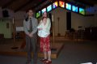
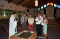
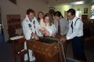
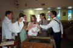
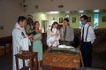
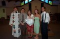
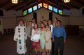
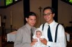
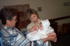

 |
This was the part before the baptism when the priest asked my parents what they wished for me. Everyone that was present was asked the same. |
 |
Before the priest baptised me, he read some scripture to all of us gathered for the occasion. |
 |
This picture might be self explanatory. I really didn't enjoy this part. |
 |
After being baptised, I was anointed with the oils that they used to use back when Christ was alive. Everyone was instructed to take part in rubbing the oils into my hair. |
 |
After the anointing, my father was instructed to light a candle, which symbolized the light of the world, which would be the word. |
 |
This picture was taken right after the baptism was over. |
 |
This is a picture of all those who attended, except for of course the guy who took the picture. |
 |
This is a picture of my dad and his brother, my Uncle Rudy. |
| These two are my favorite great aunt and uncle. I have fun with them. Tia Lizzy let's me have some coca cola! | |
 |
This is me with two of my great aunts, Tia Lizzy and Tia Carmen. |